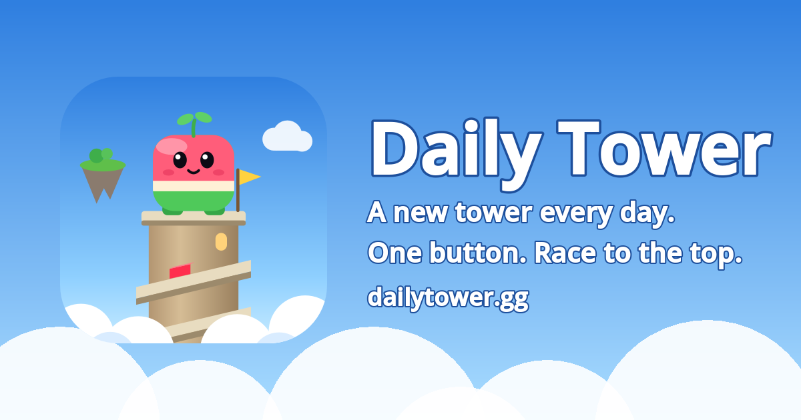

Daily Tower
Daily Tower is a free daily climbing game you play in your browser, on a phone or a computer. Every day there is one new tower, the same for everyone in the world. Your creature runs up it on its own, and you have a single button: jump. Get to the top as fast as you can and see where your time lands on the day's leaderboard.
Play today's towerHow to play
- Tap to jump. Tap the screen, or press Space on a keyboard. Hold a little longer for a higher jump.
- You never stop running. You can't wait or slow down, so it is all about timing.
- Red is dangerous. Red parts send you back, and a missed jump drops you to the floor below.
- Your score is your time. Climb as often as you like; your best time of the day is the one that counts.
A new tower every day
The tower changes once a day, at 08:00 UTC, and everyone gets exactly the same one. The week has a rhythm: gentle towers on Monday and Tuesday, trickier ones midweek, a tough one on Friday and brutal ones at the weekend. Moving platforms, quicksand, conveyor belts, glass floors and spinning bars take turns, so no two days feel the same.
Race the world
Pick a name once, with no account, email or password, and your best time goes on the daily leaderboard. Climb on consecutive days to build a streak, and share your result as a picture with friends to see who was faster.
More to do
- Endless climb. A tower with no top that gets harder the higher you go. You have three hearts; how high can you get?
- Archive. Missed a day? Play past towers from the calendar, for fun.
- Creatures. Choose the look of your jelly creature.
- Seasons. The world dresses up through the year: a spooky Halloween night, a snowy winter, a summer beach and a candy land.
Questions
Is it free? Yes. The daily tower is free to play, with nothing to download or install.
Do I need an account? No. You only pick a player name.
Does it work on my phone? Yes, it runs in the browser on phones, tablets and computers.
When is the next tower? Every day at 08:00 UTC. The start screen shows a countdown.
Play today's towerMade by Stefan Tanasković. Privacy policy